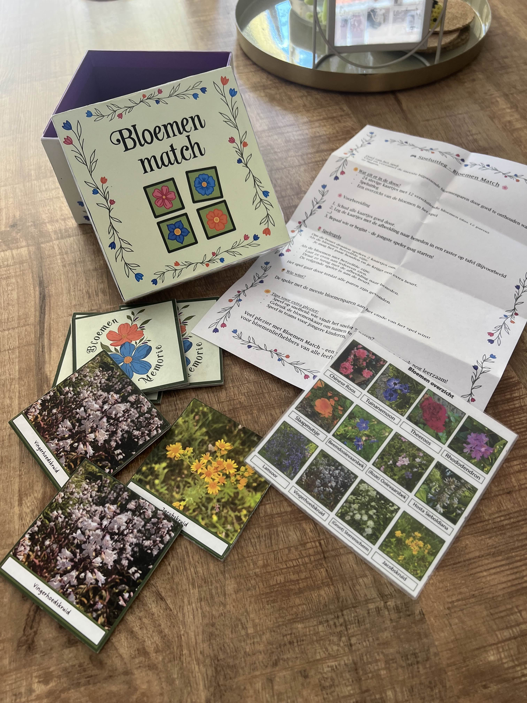
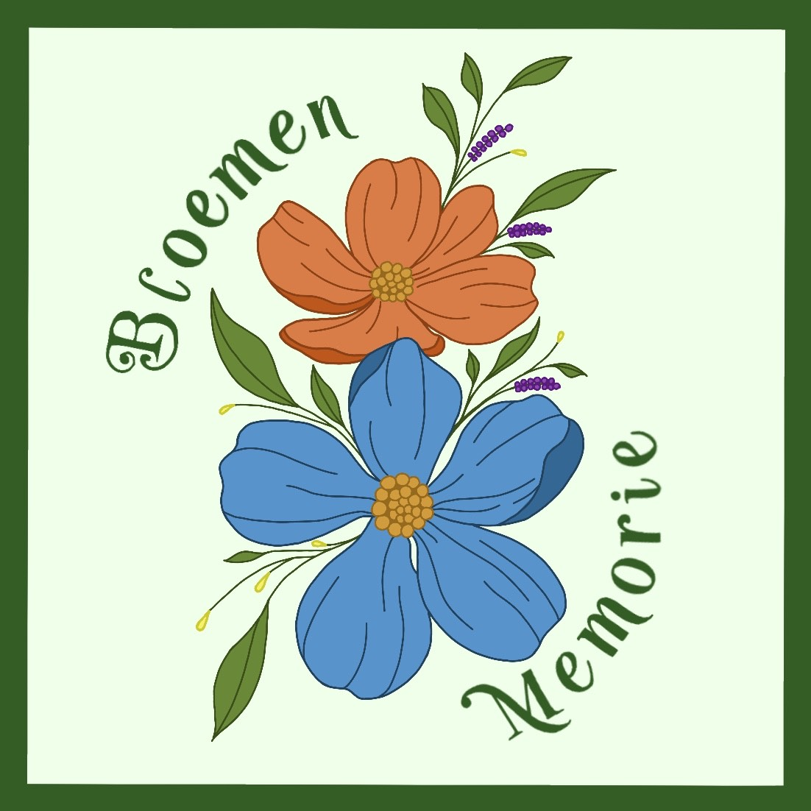
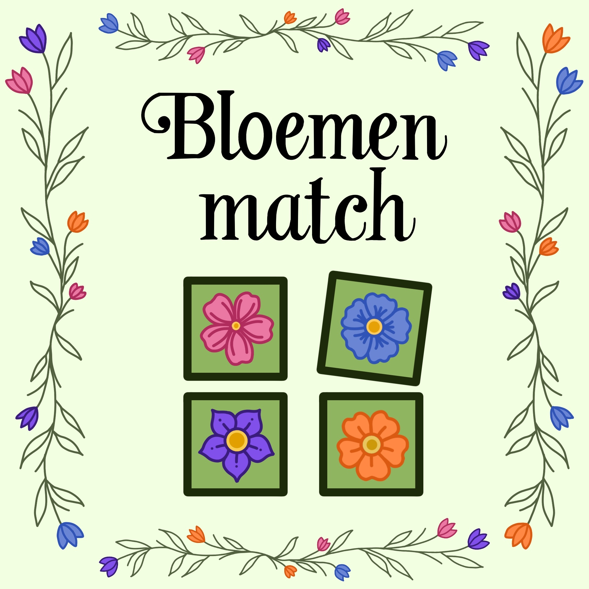

Dit ontwerp is voor een opdracht die gaat over de natuur. We moesten kinderen weer intresse geven in de natuur.
Eerst was ik van plan een foto collage te maken van bloemen maar dat vond ik later minder passen bij de kinder doelgroep dus heb ik besloten om een memorie spelte maken van de bloemen die ik al gefotografeerd had..
Ik heb de ontwerpen van de kaartjes en de doos zelf getekend op Pro-Create en de bloemen die je moet matchen zijn zelf gefotografeerde foto's. De foto's heb ik gemaakt in een vlindertuin.
Ik vind spellen ontwerpen altijd leuk maar bij deze opdracht merkte ik dat ik de simpelheid van het spel 'memorie' erg fijn vond omdat ik nu meer tijd heb kunnen stoppen in het ontwerpen van hoe het spel er uit kwam te zien.